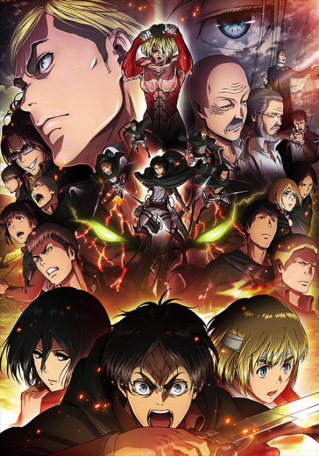
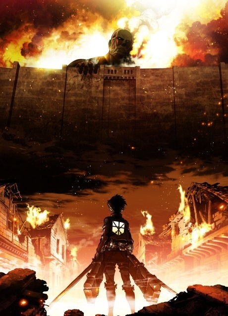
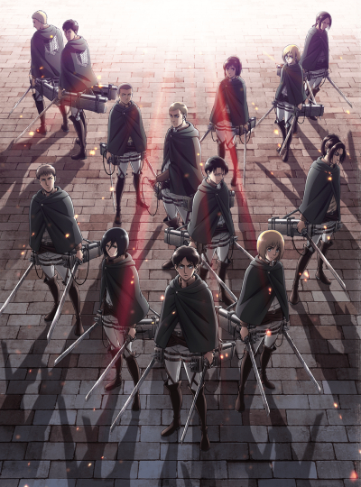

  
«Атака титанов» — эпический аниме-сериал в жанре тёмного фэнтези и постапокалипсиса, созданный по манге Хадзимэ Исаямы. События разворачиваются в мире, где человечество находится на грани вымирания из-за гигантских человекоподобных существ — титанов. Остатки цивилизации вынуждены укрываться за тремя concentric стенами, которые защищают их от угрозы извне. Рейтинг сериала на MyAnimeList — 9.1/10, что делает его одним из самых высокооценённых аниме в истории.
История начинается с трагедии в городе Шиганшина, когда Колоссальный титан разрушает внешнюю стену Мария, позволяя другим титанам проникнуть в город. Главный герой — Эрен Йегер — становится свидетелем гибели матери и клянётся уничтожить всех титанов. Вместе с приёмной сестрой Микасой Аккерман и лучшим другом Армином Арлертом он вступает в Военный корпус, чтобы сражаться с угрозой.
Эрен Йегер — главный протагонист, движимый жаждой мести и свободой. Обладает способностью превращаться в титана. Микаса Аккерман — приёмная сестра Эрена, последняя выжившая из клана Аккерманов, обладает нечеловеческой силой и боевыми навыками. Леви Аккерман — капитан отряда разведки, считающийся сильнейшим бойцом человечества. Эрвин Смит — командир отряда разведки, блестящий стратег.
По мере развития сюжета раскрываются шокирующие тайны о происхождении титанов, истинной истории мира за стенами и природе самих главных героев. Сериал мастерски сочетает экшн-сцены с глубокими философскими темами о свободе, морали, ценности человеческой жизни и природе власти. Каждый сезон приносит новые повороты сюжета, заставляя зрителей пересматривать свои представления о добре и зле.
«Атака титанов» исследует сложные темы: цикл ненависти и мести, ценность свободы, природу человека и границы морали в условиях войны. Символика стен представляет не только физическую защиту, но и ментальные барьеры, ограничивающие человеческое познание. Сериал задаёт сложные вопросы о том, что значит быть человеком и какова цена выживания.
Анимация студии Wit Studio (сезоны 1-3) и MAPPA (сезон 4) получила высокие оценки за динамичные боевые сцены и детальную проработку мира. Саундтрек Хироюки Савано и КОХА становится культовым, с запоминающимися композициями, которые идеально передают эпический масштаб и эмоциональную глубину происходящего. Открывающие и закрывающие темы стали хитами среди фанатов аниме.
«Атака титанов» — обязателен к просмотру для любителей сложных сюжетов с неожиданными поворотами, философских размышлений и эпического экшена. Сериал подойдёт зрителям, которые ценят глубокую проработку персонажей, политические интриги и моральные дилеммы. Не рекомендуется впечатлительным зрителям и тем, кто предпочитает лёгкие и позитивные сюжеты.